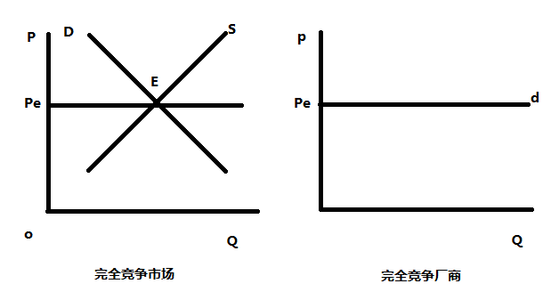
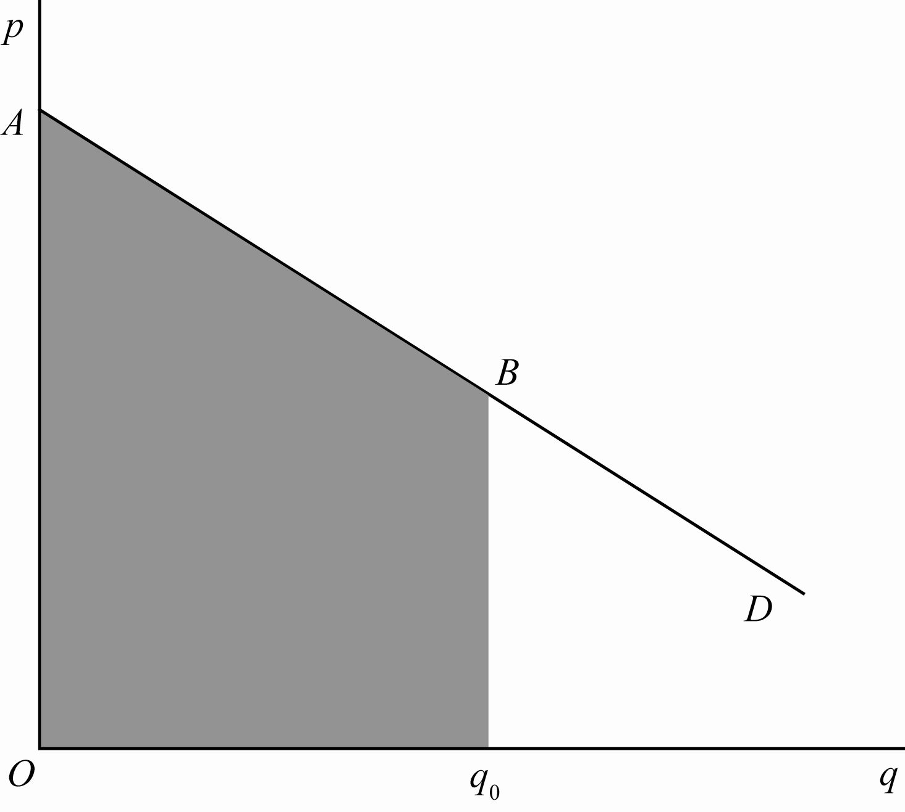

微观经济学 市场竞争
完全竞争市场
市场分类：
根据买者和卖者之间力量的对比关系：
买方市场：指买方占优势，交易主要由买方左右的市场
卖方市场：指卖方占优势，交易主要由卖方左右的市场
根据产品的性质：
产品市场：
要素市场：
市场结构分类：
市场结构：指反映市场上卖方竞争程度不同的市场状态。经济学中通常根据四个特征来区分不同的市场结构
交易者的数量
交易商品的性质
进入市场有无障碍
交易者所得到的信息是否完全
四种市场结构：
完全竞争市场
垄断竞争市场
寡头垄断市场
完全垄断市场
其中完全垄断市场是一个阶段，其他三个市场结构被合称为不完全竞争市场。
完全竞争的条件
完全竞争基于四个条件：
众多的买者与卖者
产品同质
要素流动自由
信息充分
在平狄克的书中，上述四个条件被总结为三个前提：厂商为价格接受者（对市场价格没有影响，因而只能被动接受给定价格的厂商）；产品同质；自由进入和自由退出。
现实中近似完全竞争市场的市场有：股市、专业市场、农产品市场
短期
先复习一下上一章中提到的关于收益的内容
其中短期利润最大化的条件 MR = MC 在本章中会多次出现，需要理解原理。一个比较直观的理解方法是从图像上看，当STC斜率等于TR时，差值最大，利润也最大。
竞争性厂商的需求与边际收益
完全竞争厂商是价格接受者，因此价格可以看作给定的，在图表中表示为一条水平线。
市场需求曲线和单个厂商面对的需求曲线是不同的。市场曲线向下倾斜；但厂商面对的需求曲线则是与价格重合的一条水平线。对竞争性厂商而言，他们面对的需求曲线是富有弹性的。价格不受单个厂商产量影响，而取决于市场上所有厂商与消费者的互动。
当单个厂商面对水平的需求曲线时，他不降低价格就能售出一单位额外的产量，由此销售额外一单位产品增加的总收益等于价格，即边际收益等于价格。于此同时，厂商收到的平均收益等于价格。
因此：完全竞争市场上厂商的需求曲线、平均收益曲线和边际收益曲线重合为一条与横轴平行的线，即 P = AR = MR。

完全竞争厂商的短期均衡
因为利润最大化的条件是MR = MC，所以短期均衡的条件是：P = MC。
对于厂商而言，价格是给定的，所以这一法则被用来确定产量。厂商为了使利润最大化选择产量以达到P = MC。
短期均衡可能盈利、可能亏损、也可能利润为零。利润最大化不代表盈利。
厂商短期均衡的三种情况：
- 盈利
- 亏损
- 收益为零
竞争性厂商的供给
供给曲线的推导
E0是停止营业点，此时Pq0正好覆盖可变成本，因此营业的亏损=总成本-可变成本=固定成本。
在停止营业点左侧，此时营业的亏损大于固定成本，不应营业；右侧营业的亏损小于固定成本，应当营业。
E3为盈亏平衡点，此时收益为零。
在盈亏平衡点左侧，营业亏损；在盈亏平衡点右侧，营业盈利
因此，厂商在做决策的时候，在停止营业点左侧会停止营业，供给曲线就是停止营业点右侧的曲线。
行业的短期供给曲线比厂商短期供给曲线平缓
完全市场均衡
就是第一章的供求模型
长期
完全竞争厂商的长期均衡
由于长期中要素流动自由，厂商进出行业自由，因此长期均衡时，厂商经济利润为零。
对应的，完全竞争厂商长期均衡的条件：
P = MC = AC (= AR = MR)
长期均衡厂商盈利为零。
行业的长期供给曲线
- 成本不变行业

- 成本递减行业

- 成本递增行业

不完全竞争市场
完全垄断市场
特征
只有一个厂商
厂商生产的产品无替代品
存在很高的进入壁垒
成因
规模经济（自然垄断）：如自来水、电力等公用事业
政府特许（行政垄断）：如烟草、盐业
对资源的控制：石油公司等
专利与知识产权：研发成本高但仿制成本低，保护知识产权保护积极性
均衡
完全垄断厂商的需求曲线和平均收益曲线重合并向右下方倾斜；边际收益曲线也想右下方倾斜，但在需求曲线的左下方。
完全垄断厂商的均衡条件：MR = MC
不管短期均衡还是长期均衡一般都有经济利润，也称垄断利润。
短期均衡
成本递增
反垄断：引入竞争
成本递减
反垄断：承认自然垄断地位，进行微观规制
长期均衡
价格歧视
一级价格歧视
厂商对每一单位产品都按消费者所愿意支付的最高价格出售，逐个定价（每一单位的产品价格都不相同）
实行一级价格歧视的垄断厂商，可以榨取所有的消费者剩余

二级价格歧视
厂商对不同的消费数量段规定不同的价格。购买相同数量的消费者支付相同的价格，不同消费数量之间存在价格歧视。按批次定价。
二级价格歧视获取买者的部分而非全部消费者剩余，适用于规模经济比较显著的行业。

一级价格歧视与二级价格歧视的区别：
一级价格歧视实质是逐个出售，二级价格歧视是分批定价、分批出售； 一级价格歧视对每个消费者收取不同的价格，二级价格歧视的价目表面对所有买主。
三级价格歧视
三级价格歧视是指厂商对同一种产品在不同的市场上（或对不同的消费群）收取不同的价格。
垄断竞争市场
特征
- 厂商数量较多
- 存在产品差别
- 厂商进出行业较容易
- 信息完备
产品差别是指同种产品在质量、构造、外观、销售服务、商标、广告等方面的差别。市场竞争的最大原因是产品的异质性。 垄断竞争行业（或生产集团）：服装业、食品业、鞋袜业等。
均衡
垄断竞争厂商的需求曲线和平均收益曲线重合并向右下方倾斜；边际收益曲线也向右下方倾斜，但在需求曲线的左下方。
但是严格来讲。垄断竞争厂商实际面临的需求曲线有两条：主管需求曲线d和实际需求曲线D
短期均衡的条件：MR=MC
长期均衡的条件：MR=MC且P=AC
短期均衡一般有利润，长期均衡时利润为零。

之所以出现两条需求曲线的原因是垄断厂商是生产集团共同行动
厂商主观上提价或降价都会导致其他厂商提价或降价，从而导致需求曲线的差异。
短期均衡
在短期内，垄断竞争厂商是在现有的生产规模下通过对产量和价格的调整，来实现 MR = MC 的均衡条件。在短期均衡的产量上，一定存在着一个主观需求曲线和客观需求曲线的交点，这意味着市场上的供求是相等的。同样在短期均衡时，垄断竞争性厂商可能获得最大的利润，也可能利润为零，也可能蒙受最小损失。
主观需求曲线和客观需求曲线相交点对应的产量和价格恰好是 MR = MC 时的均衡点所要求的产量和价格。此时，企业便实现了短期均衡。

MR = MC 时，利润最大化，此时为均衡点。SAC曲线用于标注总成本。OPHQ为总收益TR，白色部分为总成本TC，灰色部分为总利润π。
长期均衡
需求曲线向下移动，长期利润为0，P = AC，MR = MC。即边际收益等于边际成本，平均收益等于平均成本。这一条件表明：垄断竞争厂商在长期均衡时的利润必定为零，即在垄断竞争厂商的长期均衡点上，主观需求曲线必定与 LAC 曲线相切。

垄断竞争比完全竞争市场效率要低，价格要高。但现实中垄断竞争居多的原因从消费者的角度来看，完全竞争市场是同质的，但消费者的需求是异质的；从生产者的角度来看，厂商产品异质化掌握了定价的话语权。
方式
价格竞争：也叫数量竞争，根据 MR=MC 的原则，通过调整价格从而调整销量以实现利润最大化。
品质竞争：品质差异是除价格、数量、广告以外的所有差异，包括品牌差异、包装差异等。当提高产品品质的边际收益等于提高产品品质的边际成本时，产品达到最佳产品品质。
广告竞争：通过对产品的广告宣传来促进产品销售，以实现利润最大化。当广告的边际收益等于广告的边际成本时，达到最适广告费用。
寡头垄断市场
特征
少数几个厂商控制某一行业生产和销售的市场结构。典型的寡头垄断市场有：汽车、家电、钢铁、石油等。
厂商数量较少，但至少有两个
产品可以无差别，也可以有差别
厂商进出行业较难
厂商相互依存
成因
规模经济、对投入的控制、大量资本、技术领先、沉没成本（例：供水、供热）、政府特许等。
古尔诺模型
概念
假设：只有两个厂商生产同质产品；生产成本为0；都准确知道市场需求曲线；都假定对方产量不变来确定自己利润最大化的产量；一次行动。
结论：均衡时，每个厂商生产总产量的1/3。
推导
图示

斯坦克贝模型
设市场线性的反需求函数为P = H-aQ(a,H>0,Q = Qa + Qb)，寡头A和B的产量分别为Qa和Qb，设成本为0，即TCa=TCb=0，但是，寡头A为老练厂商，B为天真厂商。
由πb = PQb − TCb求寡头利润最大化的一阶导数得其反应函数：Qb = H/2a − Qa/2。将其带入πa = PQa − TCa。求出寡头A利润最大化的产量Qa*。
再将Qa*代入B的反应函数求B的利润最大化的产量Qb*。
贝尔特兰模型
假定：两个寡头生产同质产品，而且单位产品成本固定；但是，两寡头通过选择价格而不是产量竞争。
均衡条件：价格=边际成本
结果：每个寡头占领一般市场，但各自的利润为0
解决办法：引入产品差别（霍特林模型）
斯威齐模型
假设：如果一厂商提价，其他厂商不会跟着提价，因而提价厂商的销售量减少很多；如果一厂商降价，其他厂商也降价，因而降价厂商的销售量增加有限。
结论：弯折的需求曲线——简短的边际收益曲线——价格刚性。

支配型价格领导模型

寡头垄断厂商的勾结与定价策略
卡特尔
同一行业的少数几家厂商为增进共同利益而采取一致行动的集团或组织。如OPEC
价格领导制
在寡头垄断行业中产品的市场销售价格由某一厂商率先制订，其余厂商追随其后来确定它们各自售价的一种寡头垄断定价方式。
具体方式有：晴雨表型价格领导；支配型价格领导；最低成本型价格领导
成本加成定价法
P = AC(1 + η), η = 1/(|Ed|−1)
由MR=MC=AC,MR-P(1-1/|Ed|)推导得
博弈
要素
参与人（players）
策略（strategies）：分为纯策略和混合策略
支付（payoff）
行动顺序（the order of play）
信息（information）